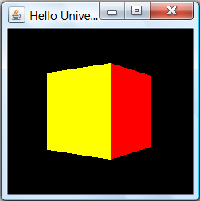

How to Install Java 3D
Java 3D is a high-level API for 3D graphics, which is implemented on top of low-level API such as OpenGL and DirectX. Java 3D is based on the so-called scene graph, which emphasizes on the scene design and composes of geometries, transformations, lighting, material, transform, textures, etc, instead of low-level rendering.
The mother site for Java 3D is https://java3d.dev.java.net and http://java.sun.com/javase/technologies/desktop/java3d.
Installing Java 3D
Download Java 3D from the Java 3D mother site @ https://java3d.dev.java.net. Choose "Downloads" ⇒ "Binary Downloads".
- Zip binaries (
j3d-1_5_2-windows-i586.zip): unzip into a directory of your choice (e.g.,d:\bin\j3d-1.5.2). The installed directory shall be referred to as$J3D_HOME(Unix notation) or%J3D_HOME%(Windows notation).
You shall get two sub-directories: "lib\ext" (j3dcore.jar,j3dutils.jar,vecmath.jar) and "bin" (j3dcore-xxx.dll). The jar files must be included in theCLASSPATHenvironment variable. The native libraries (dll) path must be included injava.library.path(orPATHenvironment variable). - API Documentation & Utils (
j3d-1_5_2-api-docs.zip): Unzip under$J3D_HOME, and rename (shorten) the directory as "doc". - Source code (
j3d-1_5_2-src.zip,vecmath-1_5_2-src.zip): Create a sub-directory called "src" under$J3D_HOME, and Unzip into$J3D_HOME\src.
Take note that Java 3D includes a library called vecmath (vector mathematics) to support vector and matrix operations.
You could optionally download the example source codes, JOALMixer (for interfacing with the JOAL - 3D audio).
Writing your First Java 3D Program
In Eclipse 3.5
- Create a new Java project, says "
J3DGettingStart". - Configure the project to include the JAR files and native libraries.
- Right-click on the project ⇒ "Properties"
⇒ "Java Build Path" ⇒ Select the "Libraries" tab ⇒ "Add External JAR..." ⇒ Navigate to
$J3D_HOME\lib\extand selectj3dcore.jar,j3dutils.jarandvecmath.jar. - Expand the "Referenced Libraries" nodes (under the project) ⇒ Right-click on "
j3dcore.jar" ⇒ "Properties":
In "Java Source Attachment" ⇒ "Location path" ⇒ "External Folder" to select$J3D_HOME\src.
In "Javadoc Location" ⇒ "Javadoc URL" ⇒ "Browse" and select$J3D_HOME\doc.
In "Native Library" ⇒ "Location Path" ⇒ "External Folder" to select$J3D\bin(which contains thedll's).
Repeat the above steps for the other JAR files.
- Right-click on the project ⇒ "Properties"
⇒ "Java Build Path" ⇒ Select the "Libraries" tab ⇒ "Add External JAR..." ⇒ Navigate to
- Create a new class under the project, called "
HelloUniverse.java". Enter the following codes:import com.sun.j3d.utils.universe.*; import com.sun.j3d.utils.geometry.ColorCube; import javax.media.j3d.*; import javax.vecmath.*; import java.awt.*; import javax.swing.*; /** * Simple Java 3D example to display a rotating color cube. */ public class HelloUniverse extends JFrame { // Constructor public HelloUniverse() { // Setup a SimpleUniverse by referencing a Canvas3D GraphicsConfiguration config = SimpleUniverse.getPreferredConfiguration(); Canvas3D canvas = new Canvas3D(config); Container cp = this.getContentPane(); cp.setLayout(new BorderLayout()); cp.add(canvas, BorderLayout.CENTER); SimpleUniverse universe = new SimpleUniverse(canvas); // Set up the viewer looking into the scene. universe.getViewingPlatform().setNominalViewingTransform(); // Create the content branch and add it to the universe BranchGroup scene = createSceneGraph(); universe.addBranchGraph(scene); // Configure this JFrame this.setSize(250, 250); this.setTitle("Hello Universe"); this.setVisible(true); } // Create the content branch public BranchGroup createSceneGraph() { // Create the root node of the content branch BranchGroup nodeRoot = new BranchGroup(); // Create the TransformGroup node, which is writable to support // animation, and add it under the root TransformGroup nodeTrans = new TransformGroup(); nodeTrans.setCapability(TransformGroup.ALLOW_TRANSFORM_WRITE); nodeRoot.addChild(nodeTrans); // Create a visual object node (color cube) and add it to the scene. nodeTrans.addChild(new ColorCube(0.4)); // Create a Behavior node to rotate the cube add it to the scene. Transform3D yAxis = new Transform3D(); Alpha timing = new Alpha(-1, 4000); RotationInterpolator nodeRotator = new RotationInterpolator(timing, nodeTrans, yAxis, 0.0f, (float)Math.PI * 2.0f); BoundingSphere bounds = new BoundingSphere(new Point3d(0.0, 0.0, 0.0), 100.0); nodeRotator.setSchedulingBounds(bounds); nodeRoot.addChild(nodeRotator); // Compile to perform optimizations on this content branch. nodeRoot.compile(); return nodeRoot; } // Entry main method to invoke the constructor on the event dispatcher thread. public static void main(String args[]) { java.awt.EventQueue.invokeLater(new Runnable() { public void run() { new HelloUniverse(); } }); } }
The output is as follows:

NOTE: If you receive an error message "SEVERE: java.lang.UnsatisfiedLinkError: no xxx in java.library.path", print out the entries in java.library.path (un-comment the System.out.println() statement) and check if $J3D_HOME\bin is included. By default, java.library.path mirrors the PATH environment variable. You might add $J3D_HOME\bin into the PATH environment, or move the dll's to one of the JDK binary path, as reflected by java.library.path.
In NetBeans 6.7
[TODO]
With JDK/Editor
[TODO]
REFERENCES & RESOURCES
Websites:
- Java 3D mother sites @ https://java3d.dev.java.net, http://java.sun.com/javase/technologies/desktop/java3d.
- Popular Java 3D sites: www.j3d.org, www.java3d.org.
- Java 3D Demos @ http://www.duling.us/kevin/Java3D.
Tutorials:
- Greq Hopkins, "The Joy of Java 3D", available @ http://www.java3d.org/tutorial.html.
- Dennis J Bouvier, "Java 3D API Tutorial", Sun Microsystems, available @ http://java.sun.com/developer/onlineTraining/java3d.
- Java 3D Examples & Demos, Sun Microsystems, avaiable at https://java3d.dev.java.net under "Examples".
- Ben Moxon, "The Little Purple Dude Walks - A Limited Adventure in Java3D", available @ http://www.benmoxon.info/Java3d.
Boooks:
- Andrew Davison, "Pro Java 6 3D Game Development, Java 3D, JOGL, JInput, and JOAL APIs", 2007.
Latest version tested: JDK 1.6, Java3D 1.5.2
Last modified: November 10, 2009